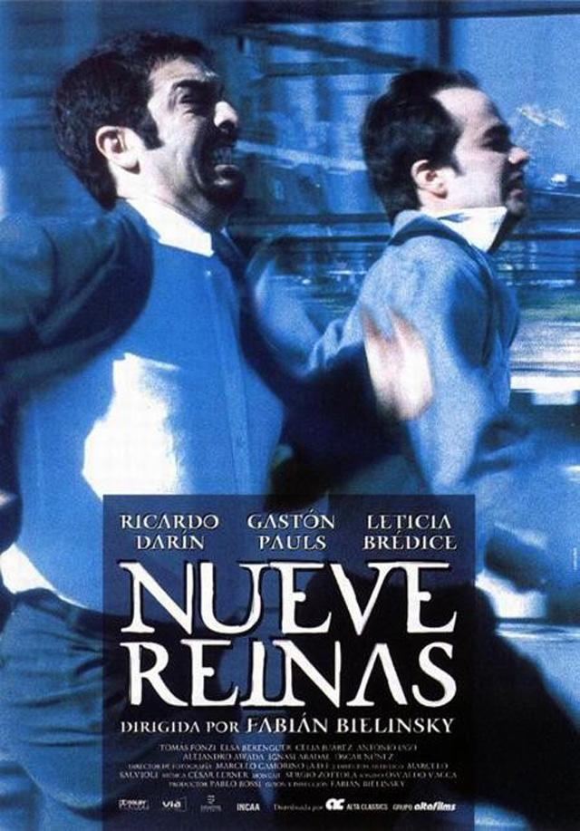
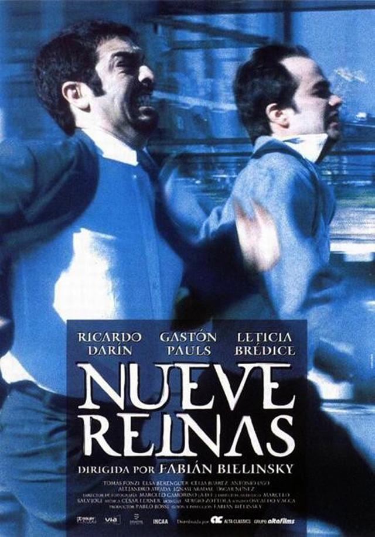

Three Billboards Outside Ebbing, Missouri
Drama
Suspenso
Policial
Comedia
Reparto: Frances McDormand, Woody Harrelson, Sam Rockwell.
Meses han pasado desde que la hija de Mildred (Frances McDormand) fue violada y asesinada. Para llamar la atención, ella decide pintar tres carteles en la entrada del pueblo acusando de desidia a las autoridades locales. Three Billboards es un film con una historia fuerte y actuaciones poderosas por parte de McDormand, Woody Harrelson y Sam Rockwell, en el que el director juega con la opinión del espectador en relación a los personajes. Un drama con toques de comedia negra que les valió a la actriz principal y a Rockwell un Óscar a cada uno por sus actuaciones.


 
